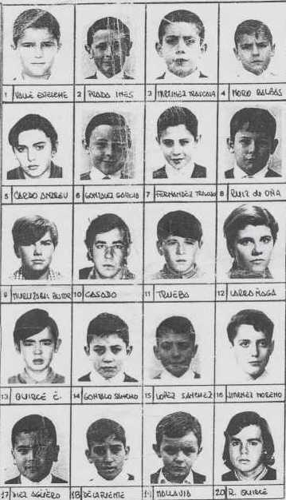

... Valle, Cardo, Muruzabal, Quirce E., Agüero, Prada, González, Casado, Gonzalo, De la Fuente, Martínez, Trigoso, Trueba, Lopez, Mallavia, Moro, Ruiz de Oña, Larrañaga ( chica ), Jiménez Moreno, R.Quirce...

<--ATRÁS
SIGUE-->
volver